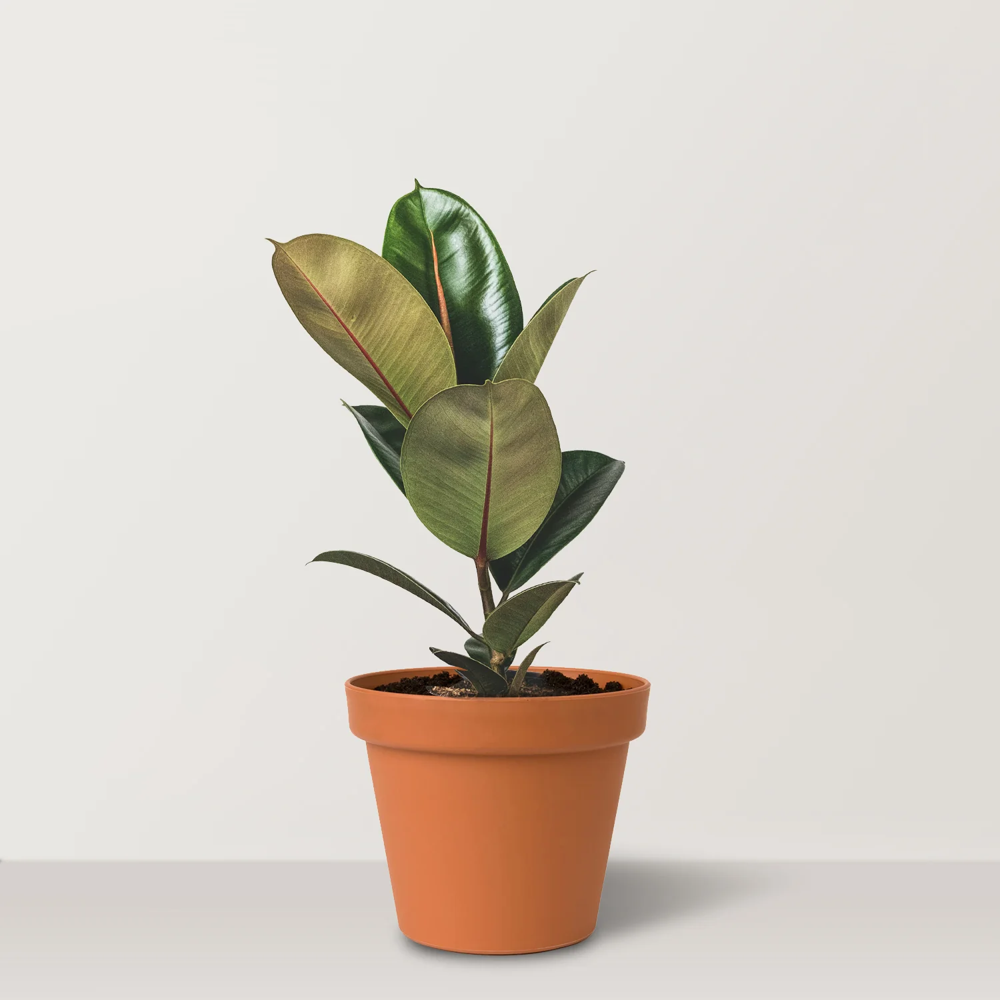

Green Guardian
Green Guardian

Ficus Elastica (Rubber Plant)
Plant Scanning Results
Water Level
70% Optimal
Soil Nutrition
85% Sufficient
Sunlight Exposure
60% Adequate
Care Tips
- Water the plant moderately, ensuring the soil remains moist but not soggy.
- Use organic fertilizers to enhance soil nutrition.
- Place the plant in an area with adequate sunlight for at least 6 hours daily.
- Regularly check for pests and take necessary measures to prevent infestations.
Need Expert Advice?
Contact one of our plant health experts for personalized guidance and advanced care solutions.
Contact an Expert